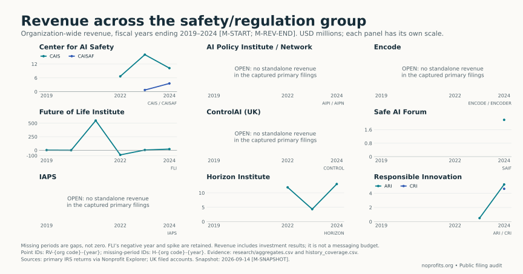

Who pays for the messaging: the AI regulation fight's money, audited from both sides
The previous post on this blog audited one node of the loudest argument on the internet. The argument is about AI regulation: safety advocates, lawmakers, and at least one major lab publicly asking to be regulated, against a chorus calling the whole push astroturf — incumbents building a regulatory moat against open-weight models. That post checked six rows of one critic’s grant graph against the filings and found the money real, the loudest edges unproven, one question still open.
This post scales the same discipline from one node to the messaging economy itself. Who pays for the messaging — both sides — in the AI regulation fight? Not who is sincere. The filings have never once recorded a motive. The money: amounts, dates, payers, payees — the part that can contradict you.
The short version
Four things survive a row-by-row audit of the public record.
The safety-side advocacy sector is new, and its filed money is large and mostly traceable to a short list of institutional payers. Nineteen entities audited; the largest named direct payers are Good Ventures Foundation and the Coefficient organizations. Good Ventures filed grants to the Center for AI Safety total $11,052,288; Horizon Institute took $11,837,990 from Good Ventures and $100,000 from Coefficient Action Fund; Americans for Responsible Innovation took $2,948,728 from Coefficient Action Fund.
Donor-advised sponsors are the second rail, on both sides. Horizon’s identified cash is 64.4% sponsor-routed; Public Citizen’s is 65.9%; the Center for AI Safety’s is 26.7%; TechFreedom’s is 20.8%. The schedules name the sponsor and the recipient. The person behind the account is anonymous by design.
The organizations fund each other, so the graph double-counts. NetChoice’s filed cash grants to TechFreedom total $1,065,000; Horizon’s to the Federation of American Scientists total $543,982; the Future of Life Institute’s to FAS total $750,000. No honest total for either “side” exists in the filings, and anyone who quotes you one is adding rows that share the same original dollars.
The lab asking loudest to be regulated is also the fastest-growing lobbying spender in the set. Anthropic’s declared federal lobbying went from $200,000 in outside-firm fees in 2023 — its first numeric appearance — to $3,130,000 in company-reported expenses in 2025 to $5,030,000 in the first half of 2026 alone. All-issues, not AI-specific. But the steepest line on the chart belongs to the regulation hawk.
What the audit cannot see matters as much: complete shares of total funding are OPEN for every organization in the universe — the filings contain no donor-by-period receipts ledger, and donor-advised accounts are built to make one unreachable.
What we audited
Nineteen legal entities in three groups: the safety/regulation side (Center for AI Safety and its c4 Action Fund, AI Policy Institute and the separate AI Policy Network, Encode Justice and its research foundation, Future of Life Institute, ControlAI’s UK company, Safe AI Forum, Institute for AI Policy and Strategy, Horizon Institute, Americans for Responsible Innovation and its linked Center for Responsible Innovation), established comparators (Public Citizen and its foundation, Federation of American Scientists), and the industry/innovation side (Chamber of Progress, ITIF, TechFreedom, NetChoice). Plus the labs’ own lobbying disclosures: Anthropic, OpenAI, Google, Meta, xAI, Microsoft, Amazon.
Four evidence directions, each bounded and dated. Payer-side grant schedules — the working direction for who-paid-whom, since grantee names are public on Form 990 Schedule I and Form 990-PF: thirteen payers’ returns searched, fiscal years ending 2019–2025. Org-side Forms 990 for revenue and expense histories. Senate LDA lobbying disclosures, 2019 through completed quarters in 2026. Organizations’ own funder pages, captured verbatim. IRS e-file XML, ProPublica, Companies House for the UK entity; snapshot 2026-09-14.
The rules were enforced mechanically, not by temperament: every number carries a row ID in a public CSV, with source URL, snapshot, and verbatim quote; money types are never summed (a grant is not a recommendation is not a commitment is not revenue); “none found” always names the documents searched and their dates; and the prompt — reproduced in the appendix — banned motive language outright, including the word “astroturf.” A calculator rebuilds every aggregate from the rows, asserts them against frozen values, and fails loudly if any row drifts. Before publication, the eighteen highest-stakes rows were re-checked independently against the live filings: every amount, EIN, and fiscal period matched. The verdicts that matter are KEEP, KILL, and OPEN — where OPEN means the evidence does not exist in the examined public record, never zero and never inference.
The wave
Start with the shape of the sector, because it explains everything else. Figure 1 plots filed revenue for the safety-side organizations.

Figure 1. Filed revenue, safety-side entities, fiscal years ending 2019–2024. Lines begin when the filings begin — for most of these organizations, 2022 or 2023. The Federation of American Scientists, at $29,395,631, is a decades-old institution with a broad portfolio; nearly everything else on the chart is new. Horizon Institute filed $13,091,933 of revenue for 2024, two years after its incorporation. The Center for AI Safety filed $10,235,085 for 2024, plus $3,577,153 through its 501(c)(4) Action Fund. Where a line is absent, the chart says OPEN — no standalone filing in the window — not zero.
The fight’s advocacy infrastructure did not exist three years ago. Whatever else the current moment is, it is a young sector’s first boom.
The named money
Follow the filed cash. Figure 2 maps payers to recipients across the whole universe; the safety side first.
![Matrix heatmap of filed grant amounts from institutional payers to advocacy organizations, with payer columns and organization rows. The darkest cells run down the Good Ventures column into the Center for AI Safety, Horizon Institute, Safe AI Forum, and Center for Responsible Innovation, and down the Coefficient Action Fund column into Americans for Responsible Innovation and the Federation of American Scientists. Silicon Valley Community Foundation, National Philanthropic Trust, Vanguard Charitable, and Tides columns show amounts scattered across both sides. Blank cells mean no match was found, not zero.](../calcs/advocacy-audit/figures/02-funder-matrix.svg)
Figure 2. Filed cash grants by named payer, available source periods. Blank means no match found in the searched schedules, not zero.
One orbit dominates the named direct money on the safety side. Good Ventures Foundation — the private foundation whose grant index anchors the previous post — appears in filed schedules paying the Center for AI Safety $11,052,288, Horizon $11,837,990, Safe AI Forum $1,100,000, and the Center for Responsible Innovation $3,000,000. Coefficient Action Fund appears paying Americans for Responsible Innovation $2,948,728 and the Federation of American Scientists $1,011,000. The organizations’ own funder pages corroborate the neighborhood: IAPS names Coefficient Giving, Hewlett, Longview, and Macroscopic Ventures; ARI names Omidyar Network and Coefficient Giving; Encode’s legal notice names the Heising-Simons Foundation, SFF, and Archewell.
On the industry side, disclosure runs differently. The Chamber of Progress names corporate partners — Amazon, Google, OpenAI, Apple, a16z — and files $9,683,024 of revenue, but attaches no amount to any name. ITIF’s supporter page names companies contributing more than $10,000 in the past fiscal year — Alphabet, Amazon, Meta, Microsoft, and, on the same list, Anthropic. No per-donor amounts, no fiscal-year end date.
Hold that last row, because it is the audit’s favorite kind of finding. The lab most publicly committed to regulation appears on the supporter list of a think tank generally arguing the innovation side of tech policy. Neither fact cancels the other. A lab can fund both sides of an argument, and the filings will faithfully record both. That is a description of structure, not an accusation of anything — which is exactly the sentence this blog exists to be able to print.
The second rail
Direct foundation grants are only half the filed picture. The other half runs through donor-advised-fund sponsors — public charities that hold thousands of individual accounts, each advised by a donor whose name appears nowhere.
![Bar chart of the donor-advised-sponsor share of identified filed cash for each organization. Public Citizen Foundation shows 100 percent, Public Citizen 65.9 percent, Horizon Institute 64.4 percent, the Federation of American Scientists 36.2 percent, the Center for AI Safety 26.7 percent, Safe AI Forum 23.9 percent, TechFreedom 20.8 percent, and the Center for Responsible Innovation 18.9 percent. A note states the denominator is identified filed cash only and does not include awards, recommendations, or revenue.](../calcs/advocacy-audit/figures/04-daf-sponsor-share.svg)
Figure 4. DAF-sponsor-routed cash as a share of identified filed cash, safety and industry sides alike. The denominator is identified filed cash only — not revenue, not recommendations, not the organizations’ full budgets. A high bar can reflect a narrow source pool; ITIF and the Future of Life Institute also read 100%, off identified pools of $276,500 and $556,200 respectively.
The pattern does not respect the fight’s dividing line. Public Citizen — founded 1971, financed by members — routes 65.9% of its identified cash through Tides. Horizon routes 64.4% through NPT, SVCF, and Vanguard. The Center for AI Safety routes 26.7% — $4,026,240 of $15,078,528 identified — through the same three sponsors. TechFreedom, on the industry side, routes 20.8% through NPT.
What the sponsor schedules establish is precise, and it is all they establish: the sponsor cut the check. Its own returns describe maintaining donor-advised accounts; nothing on the grant row says which account, which adviser, or whether the dollars were advised at all. The anonymity is not a gap in diligence. It is the product’s architecture, available to every political direction at once — and used by all of them in these schedules.
The orgs pay each other
Now the reason no honest side-total exists. Money in this graph changes hands between the nodes.
| Payer | Recipient | Filed cash |
|---|---|---|
| NetChoice | TechFreedom | $1,065,000 |
| Horizon Institute | Federation of American Scientists | $543,982 |
| Future of Life Institute | Federation of American Scientists | $750,000 |
| Public Citizen Foundation | Public Citizen | $625,000 |
Table 1. Selected inter-organization grants in the searched schedules. Available source periods; not annual amounts.
FAS is the hub — seven named payers in the searched schedules, from Coefficient Action Fund to Vanguard. TechFreedom’s two largest identified cash sources are an industry association and a DAF sponsor. And the flows cross the fight’s line: the safety side’s money reaches FAS directly, and the industry side’s money funds an advocacy org through its own trade group.
Add these rows together and you double-count: the same original dollar can appear as a Good Ventures grant to Horizon, then again as a Horizon grant to FAS. The previous post refused to sum money types; this post refuses to sum nodes. Anyone who quotes a single “total funding” number for either side is adding rows that share ancestors. The filings will not support it.
The labs’ own voices
The organizations are the amplifiers. The labs speak for themselves, in declared dollars, through federal lobbying disclosures.
![Two heatmap panels of federal lobbying amounts by company and year from 2019 to the first half of 2026, measured in millions of dollars. Left panel shows companies' own expense reports; right panel shows outside firms' direct-client fee reports. Anthropic's row reads OPEN for 2019 through 2022, then 0.72, 3.13, and 3.53. OpenAI reads OPEN until 0.26 in 2023, rising to 2.22 by the first half of 2026. Google, Meta, Microsoft, and Amazon show steady rows in the 9 to 26 million range. xAI reads OPEN throughout.](../calcs/advocacy-audit/figures/03-lab-lobbying.svg)
Figure 3. Federal lobbying disclosures, 2019–2026 H1. Two overlapping measures that must not be added: companies’ own expense reports (left) and outside firms’ direct-client fees (right). Blank cells are OPEN — no eligible numeric report — never zero. Latest year covers completed quarters through June 30 only.
The incumbents are the incumbents: Google, Meta, Microsoft, and Amazon have declared between roughly $12 million and $30 million a year, all issues, every year of the window, flat lines across a policy revolution. The growth story belongs to the two frontier labs:
| Lab | 2023 | 2024 | 2025 | 2026 H1 |
|---|---|---|---|---|
| Anthropic (expense) | OPEN | $720,000 | $3,130,000 | $3,530,000 |
| Anthropic (fees) | $200,000 | $240,000 | $600,000 | $1,500,000 |
| OpenAI (expense) | $260,000 | $1,760,000 | $2,990,000 | $2,220,000 |
| OpenAI (fees) | $120,000 | $690,000 | $1,150,000 | $560,000 |
Table 2. Declared federal lobbying, company expense reports and outside-firm direct-client fees, kept separate. xAI produced no numeric report in the bounded queries; X Corp’s separate filings are not allocated to it (OPEN).
In thirty months Anthropic’s declared lobbying grew from a single outside firm’s fees to $5,030,000 in half a year — a quarter of Meta’s full-year run rate, from a standing start, by the company whose CEO tells Congress and essay readers that AI should be regulated. Both sentences are rows in the same public ledger, and the post draws no conclusion from their adjacency beyond the adjacency itself. The disclosures are all-issues; they carry no AI-specific allocation, and this post assigns none.
The rematch, one level up
The previous post audited a critic’s grant graph node by node. One of that pack’s claims reaches directly into this audit — the “donor-advised channel” assertion that money routed through DAF sponsors to the AI-safety cluster grew from $8 million to $66 million in the year of Anthropic’s first tender offer. Same apparatus, one level up:
| Author-selected recipient population | FYE June 2024 | FYE June 2025 |
|---|---|---|
| Original figure, excluding borderline tier | $8,157,254 | $65,627,700 |
| Broad category, including borderline | $8,384,254 | $65,698,900 |
| Only recipients labeled AI safety | $6,555,488 | $52,557,061 |
Table 3. Vanguard Charitable Schedule I grants to the original figure’s selected recipient set, recomputed from the filed schedules, with population sensitivity. These are membership variations, not competing estimates of anything.
The arithmetic KEEPs, with its description narrowed: the payer is Vanguard Charitable specifically — substituting SVCF, NPT, or Tides for that payer is a KILL, and the original brief’s two EINs for those sponsors were wrong (the correct identifiers, from primary documents, are SVCF 20-5205488 and NPT 23-7825575). What the arithmetic does not establish is everything that makes the figure scary: that the money bought regulation messaging (OPEN — the recipient set includes general EA infrastructure, and grant rows allocate no spending), that the timing tracks Anthropic’s tender offer (OPEN — no primary tender document was verified), or whose accounts the dollars came from (OPEN — Schedule I names payer and recipient, full stop). Among the FYE June 2025 component grants, one row pays $4,000,000 to METR — the same organization the previous post showed has no direct Coefficient or Good Ventures grant row in the checked filings. The money reaches everywhere in this story; it just does not always introduce itself.
What the filings cannot see
The honest ledger of this audit is its OPEN column, and three invisibility structures deserve naming, because they are features of the system, not failures of effort.
Complete funding shares are OPEN for every organization audited. A public donor-by-period receipts ledger does not exist in the examined records. Payer-side cash disbursements and recipient accrual revenue cannot be reconciled into shares without documents nobody files.
Donor-advised anonymity is structural. The sponsor reports maintaining advised accounts; the grant row never says which one. The closing document for every DAF row in this post is a sponsor or adviser disclosure tying a specific grant to a specific account — the exact document the product is designed not to produce.
Several organizations are hard to see at all. AI Policy Institute’s standalone tax identity remains unresolved — SFF’s 2025 recommendation routes $1,635,000 to it through The Hack Foundation, a fiscal sponsor, which makes a receiving charity’s revenue nobody’s budget. Encode Justice’s c4 identity is similarly unresolved. ControlAI’s UK filings omit the income-and-expenditure account entirely — its balance sheet reports £5,506,577 of assets, and its revenue is legally invisible. Historical FTX-linked funding is OPEN: the dead money stays dead only in the sense that no examined ledger revives it.
A fight this loud, running on money this hard to see, will produce a thousand confident graphs. The filings support almost none of the confident versions — and the few things they do support, they support exactly.
The thing worth taking away
Both sides of this fight are telling a story about the other’s money. The audit’s finding is duller and more useful than either story. The money on both sides is real, large, recent, and declared at the source — foundation grant schedules name the safety side’s payers as faithfully as the Chamber of Progress’s partners page names the industry’s. The same money is also structurally anonymous wherever it touches a donor-advised account, for everyone equally. The “unseen hands” are visible as institutions and invisible as people, and that is the system working as designed, for every political direction at once.
In a fight where every side arrives with a graph, the only neutral ground is the filing. This post and the last one stand on the same square meter of it.
One disclosure, because this post is also a finding. The audit behind it was run by an AI agent working from the published prompt below; the figures came from its calculator, every number carries a row ID, the calculator was drift-tested with deliberately corrupted data, and the eighteen highest-stakes rows were re-checked against the live filings before publication — including by reading a 93-megabyte Vanguard return end to end. The tools whose regulation is being fought over were used to audit the fight itself. That is only safe to say in print because every step left rows a reader can check; the checkability, not the model, is the claim.
And the author’s stake, declared rather than discovered later: this work exists because AI tools let one person do in an evening what would otherwise take a team days. Losing that — to any flavor of the current fight that ends with these tools gated or gone — would feel like Flowers for Algernon, and the author is not neutral about it. Weigh that bias when you weigh this post. The rows will not mind.
Corrections welcome if a primary document moves a verdict or closes an OPEN.
Public-record audit of named funding rows. Not an evaluation of any organization, funder, or donor named or unnamed, and not a claim about anyone’s motives. “OPEN” means no qualifying public document in the searched records as of snapshot 2026-09-14 — never zero and never an allegation. Lobbying figures are self-reported, all-issues, and carry the Senate Office of Public Records notice that it “cannot vouch for the data or analyses derived from these data.” Funding shares of total budgets are unestablished throughout. Organization financial histories cover fiscal years ending 2019–2024; grant schedules cover available fiscal years ending 2019–2025; lobbying covers 2019–2026 with the latest year limited to completed quarters through June 30. Money types are never summed. Everything quoted above traces to a row in the audit directory; the calculator rebuilds and asserts every aggregate and fails loudly on drift.
Appendix
The prompt. The audit was commissioned with this prompt, verbatim. The rules in it — row-keyed evidence, money types never summed, bounded “none found,” banned motive words, a drift-tested calculator — are the method this post kept.
Audit who funds the messaging — both sides — in the fight over AI regulation. This is the data backbone for a data-journalism post on blog.noprofits.org; humans write the post, you build the dataset, run the calculations, make the plots, and hand back a quotable summary. That blog's brand is every number traceable to a primary public filing, so the rules below are non-negotiable.
RULES
1. Every number traces to a row in research/*.csv. Each row: row_id, amount, source_url, snapshot_date, verbatim_quote_from_source, note. No number anywhere without a row id.
2. Verdicts per claim: KEEP (primary document confirms), KILL (contradicts), OPEN (unverifiable). OPEN is a valid, expected outcome — never fill gaps with inference.
3. Never sum different money types: grants, recommendations, commitments, lobbying fees, DAF-routed grants, and org revenue totals stay separate and labeled as what they are.
4. "None found" must be bounded: name the documents searched and their dates.
5. No motive language anywhere, including plot labels. Describe funding structures. The words "front group", "astroturf", and "proxy" are banned.
6. Public data only; respect robots.txt and terms of service; no logins; do not contact any organization.
ORG UNIVERSE (~15 max; verify existence and tax status first, add orgs you discover with a one-line justification, drop dead ones)
- Safety/regulation side: Center for AI Safety (incl. any c4 arm), AI Policy Institute (incl. c4), Encode Justice, Future of Life Institute, ControlAI (UK), Safe AI Forum, Institute for AI Policy and Strategy, Horizon Institute for Public Service, Americans for Responsible Innovation.
- Established-org comparators: Public Citizen, Federation of American Scientists.
- Industry/innovation side: Chamber of Progress, ITIF, TechFreedom, NetChoice.
- Labs' own lobbying spend (LDA): Anthropic, OpenAI, Google, Meta, xAI, Microsoft, Amazon.
DATA SOURCES, in reliability order
1. Funder-side 990-PF grant schedules — the WORKING direction for who-funded-whom (grantee names are public): Coefficient Giving grants index + its 990; Good Ventures Foundation EIN 46-1008520 (through FYE June 2025); Open Philanthropy historical grants database; Survival and Flourishing Fund recommendation pages (recommendations ≠ grants — label them); EA Funds; FTX Future Fund and Building a Stronger Future (historical; label dead money).
2. Org-side Forms 990 via IRS e-file XML (apps.irs.gov/pub/epostcard/990/xml/ index files) or ProPublica Nonprofit Explorer API: total revenue, assets, program expenses, 2019–2024. Schedule B donor detail is redacted for most post-2020 filers — do not attempt donor identification from c3 filings; use direction 1.
3. DAF-sponsor 990-PFs — Silicon Valley Community Foundation EIN 20-5205488, National Philanthropic Trust EIN 23-7327907, Tides if relevant: their grant schedules name grantees even when donors are anonymous. For each org compute the DAF-routed share of identified funding.
4. Lobbying: Senate LDA bulk data (lda.senate.gov) — registrants, clients, issue codes, fee totals, 2019–2026 YTD.
5. Org self-disclosures ("our funders" pages, annual reports) — capture verbatim with URLs and dates.
6. UK entities via Companies House where filings exist.
REMATCH TASK
The claim package kevinnbass/metr-money-figure asserts donor-advised money to the AI-safety cluster grew from $8M to $66M in the year of Anthropic's first tender offer, with no filing saying whose it is. Verify, bound, or kill that claim from SVCF/NPT/Tides 990-PF data, same KEEP/KILL/OPEN discipline.
DELIVERABLES, in calcs/advocacy-audit/
- research/*.csv — row-id-keyed, per the rules
- compute.py — reads the CSVs, reproduces every aggregate, and asserts each figure; fails loudly on drift
- figures/*.png at 1200x630 plus .svg: (1) safety-side org revenue 2019–2024; (2) funder×org matrix heatmap (sourced amounts only); (3) LDA lobbying fees by lab per year; (4) DAF-routed share per org. Honest axes, label any truncation, captions a non-specialist can read
- STATE.md — every open question, each with the document that would close it
- NOTES.md — the quotable summary: per-org funding profile (declared / DAF-routed / unidentified shares), the verdict table (org × funding-claim × KEEP/KILL/OPEN), top-line findings, and the three strongest sentences a careful writer could publish — each carrying its row ids
SUCCESS CRITERIA
A human can write the post from NOTES.md alone; every number in it survives a hostile fact-check; the verdict table is complete for the org universe; the plots need no rework to publish.
Do NOT commit to git, do not publish anything.The verdict table. Complete organization × claim matrix, as audited; the full row-level detail is in the audit directory.
| Organization / legal entity | Identity and tax status | Filed cash | Declared sources | DAF-sponsor route | Complete funding shares |
|---|---|---|---|---|---|
| Center for AI Safety | KEEP | KEEP | OPEN | KEEP | OPEN |
| Center for AI Safety Action Fund | KEEP | OPEN | OPEN | OPEN | OPEN |
| AI Policy Network | KEEP | OPEN | OPEN | OPEN | OPEN |
| AI Policy Institute | OPEN | OPEN | OPEN | OPEN | OPEN |
| Encode Research Foundation | KEEP | OPEN | OPEN | OPEN | OPEN |
| Encode AI Corporation / Encode Justice | OPEN | OPEN | KEEP | OPEN | OPEN |
| Future of Life Institute | KEEP | KEEP | KEEP | KEEP | OPEN |
| ControlAI (UK) | OPEN | OPEN | OPEN | OPEN | OPEN |
| Safe AI Forum | KEEP | KEEP | OPEN | KEEP | OPEN |
| Institute for AI Policy and Strategy | KEEP | OPEN | KEEP | OPEN | OPEN |
| Horizon Institute for Public Service | KEEP | KEEP | KEEP | KEEP | OPEN |
| Americans for Responsible Innovation | KEEP | KEEP | KEEP | OPEN | OPEN |
| Center for Responsible Innovation | KEEP | KEEP | KEEP | KEEP | OPEN |
| Public Citizen | KEEP | KEEP | KEEP | KEEP | OPEN |
| Public Citizen Foundation | KEEP | KEEP | OPEN | KEEP | OPEN |
| Federation of American Scientists | KEEP | KEEP | KEEP | KEEP | OPEN |
| Chamber of Progress | KEEP | OPEN | KEEP | OPEN | OPEN |
| Information Technology and Innovation Foundation | KEEP | KEEP | KEEP | KEEP | OPEN |
| TechFreedom | KEEP | KEEP | OPEN | KEEP | OPEN |
| NetChoice | KEEP | OPEN | OPEN | OPEN | OPEN |
Table 4. Verdicts, snapshot 2026-09-14. Cash = matched legal-grantee payment in searched filings; Declared = attributed self-disclosure; Route = matched DAF-sponsor payment; Shares = complete share of total funding. Every verdict traces to a row ID in research/verdicts.csv; the open questions and their closing documents are in STATE.md.